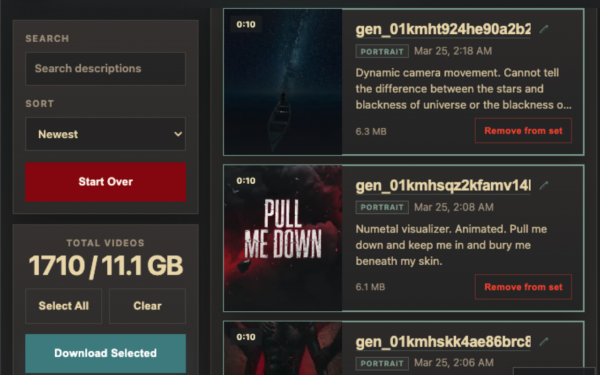
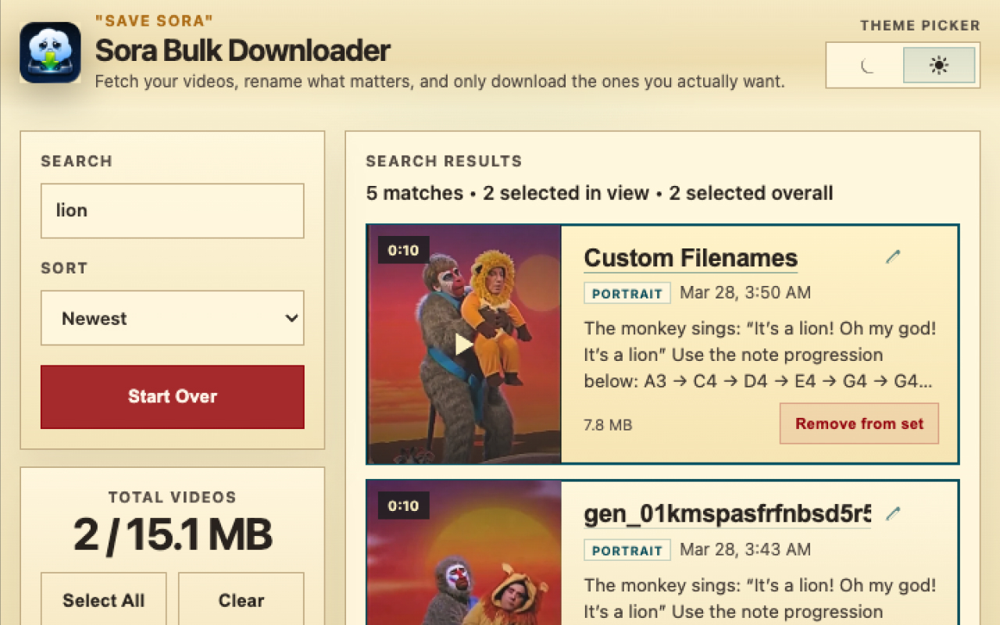
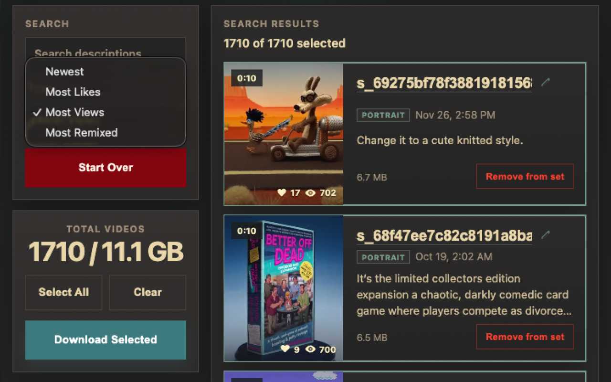
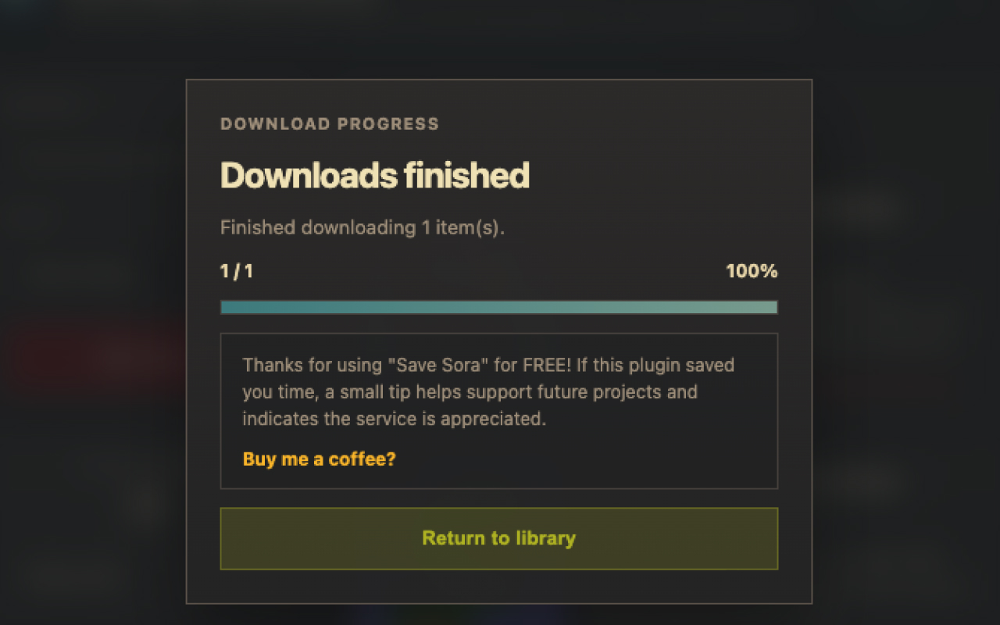

No third-party account. No cookie dumping. No one-by-one downloading.
The last Sora downloader you’ll ever need.
Download, cache, dedupe, organize, and export your Sora library directly from Chrome.
Save Sora is built for people who want to preserve their published posts, drafts,
likes, cameos, character videos, creator videos, and side character feeds without
handing their data to a middleman. It runs locally, stays open-source, and is built
to handle serious libraries instead of a handful of clips.
Watermark-free downloads for public s_ posts, with draft-safe fallbacks.
Large-library friendly fetches with local backup, lazy-loaded browsing, and resumable flows.
ZIP exports, automatic file naming, folder grouping, prompt CSV exports, and URL CSV exports.
Current release v1.17.23




Built forPublished, drafts, likes, creators, characters, and side characters
ExportsZIP archives, prompt CSV, and URL CSV
Trust modelOpen-source, local-first, no third-party login
ConvenienceSelf-updating unpacked installs after first setup
Feature list
Download the parts of Sora that most tools still miss.
Save Sora is meant to be the one place where you can actually back up your library
without hopping between downloader sites, losing metadata, or restarting giant fetches
every time something gets interrupted.
Everything that matters
One extension, one browser session, one place to work through the library you actually care about.
Published posts
Draft videos
Liked videos
Cameo appearances
Character account posts and drafts
Creator feeds and creator cameo feeds
Side Character videos and community side-character appearances
Built for serious libraries
The product is built around keeping large fetches practical instead of collapsing under their own weight.
Local caching and IndexedDB-backed overflow handling
Resume-friendly fetches for long-running creator and character scans
Deduping and state-aware handling for draft and published variants
Background-friendly fetches with live streaming results
Lazy-loaded browsing instead of hard UI truncation pages
Watermark-free routing for public posts when available
Export and organize
Archive the files you actually want, then leave with something usable instead of a messy folder dump.
ZIP archive downloads
Automatic filename cleanup
Folder grouping by content type
Prompt export as CSV
URL export as CSV
Search, sort, preview, and curate before downloading
Why people switch
It feels like an archive tool, not a sketchy downloader site.
No extra account required. Save Sora uses the Sora session already present in your browser. It does not ask you to paste cookies, tokens, or passwords into a random website.
It was built for real Sora users. That means creator grids, side characters, large scans, ZIP downloads, export workflows, and the small quality-of-life touches that matter once you have hundreds or thousands of videos.
The code is public. If you are technical, inspect it. If you are not technical, ask any AI model to audit the repo and explain what it does. The whole point is that nothing important is hidden.
Inside the product
A quick look at the working extension.
The current shipping product is the Chrome extension in this repository. GitHub Pages
exists to explain it, show screenshots, and point people to the latest release.
Install in minutes
Load it once, then let the extension update itself from there.
Save Sora is built for desktop Chrome. After the first install, current builds can
update themselves without forcing you through a manual reinstall every time.
If you are visiting from Reddit or GitHub and just want the fastest path:
Download the latest release ZIP.
Open chrome://extensions in desktop Chrome.
Enable Developer mode.
Choose Load unpacked and point it at the unzipped folder.
Open Sora in the same Chrome profile and start fetching.
Grab the latest release archive, unzip it somewhere easy to find, and keep that folder on your machine.
2
Open Chrome’s extension manager
Visit chrome://extensions and enable Developer mode.
3
Click “Load unpacked”
Select the unzipped Save Sora folder. Chrome will load the extension immediately.
4
Open Sora and use your normal session
Save Sora relies on the browser session you already use. No token pasting. No separate login flow.
Feature request poll
Vote on what ships next.
This page reads live feature requests from GitHub Issues. Vote by leaving a
👍 reaction on a request, or add your own suggestion with the feature
request form. Every visitor sees the same shared leaderboard because the results are
stored in the public repository.